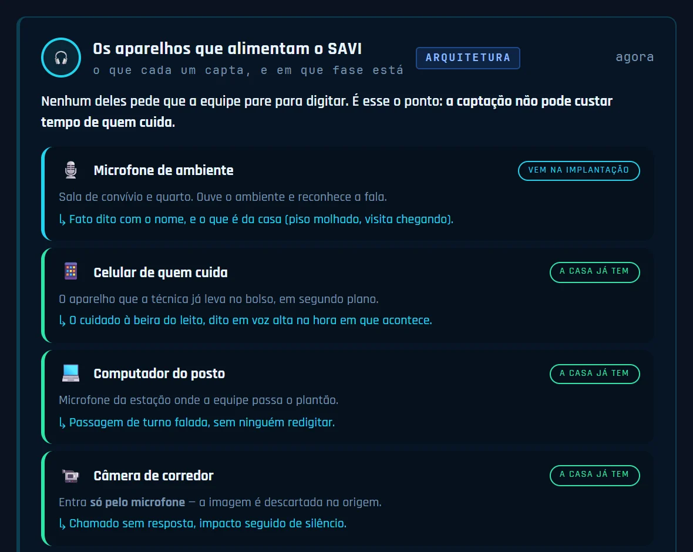
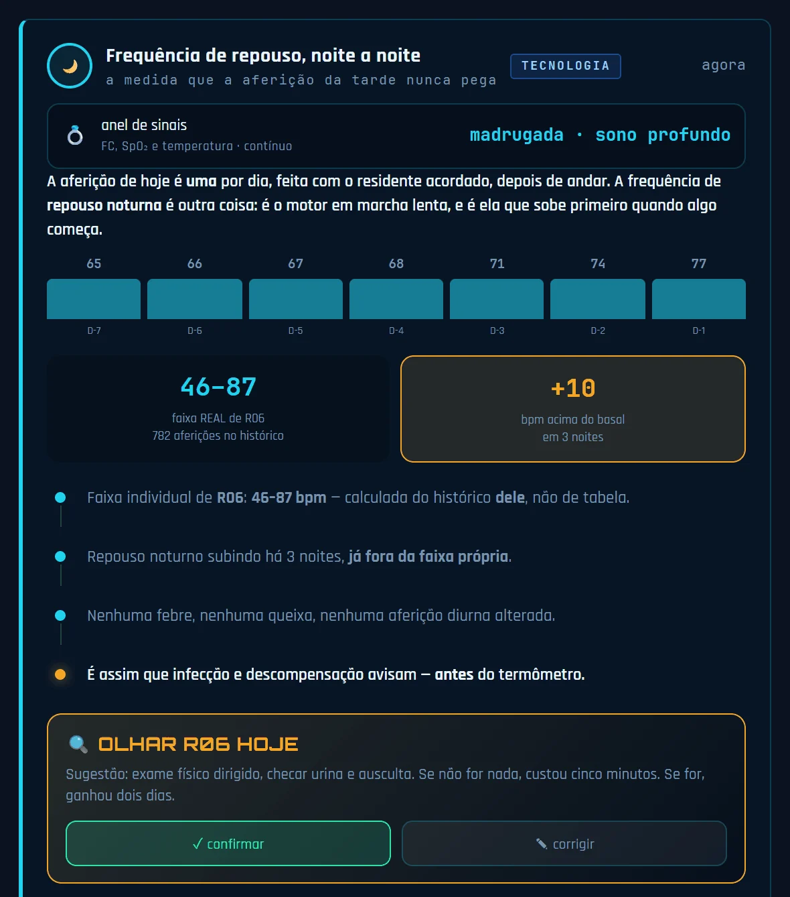
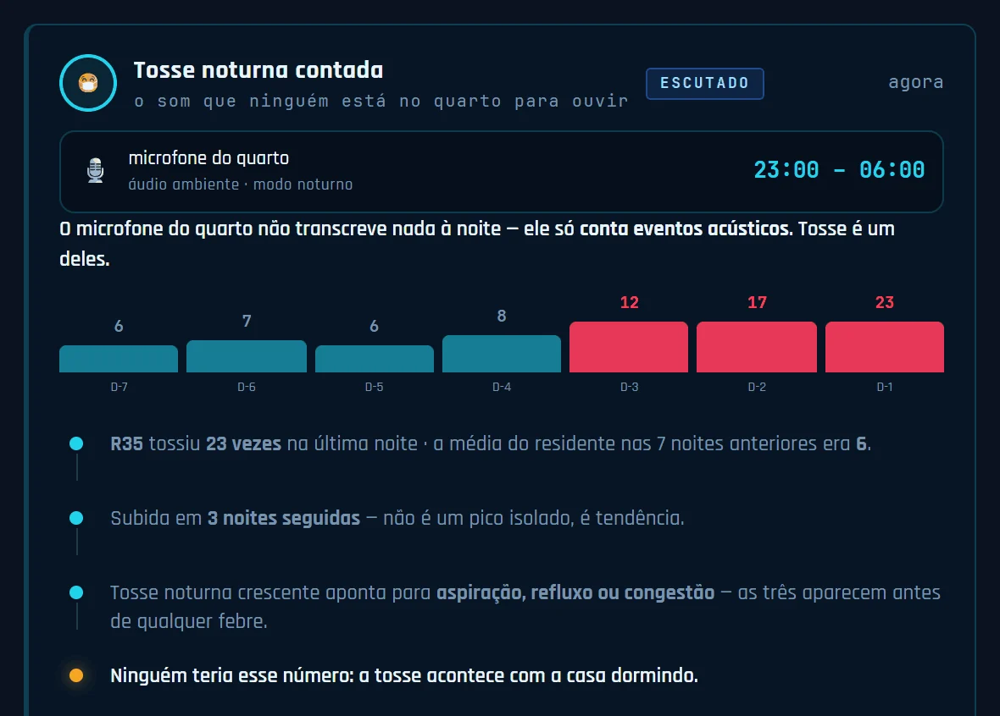
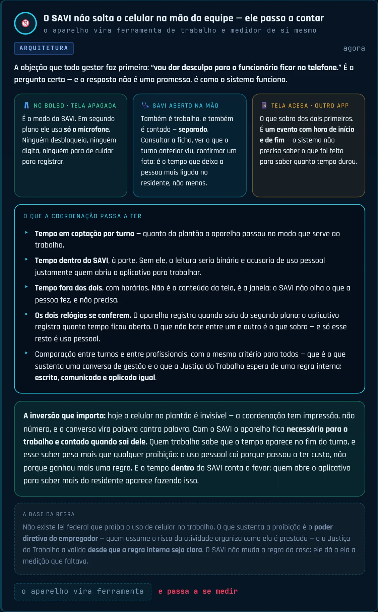
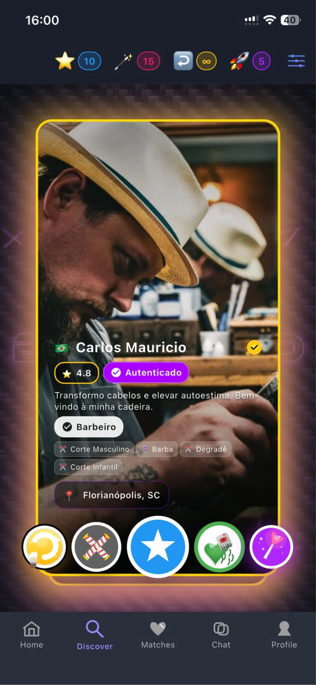

De cada R$ 100 que um hospital gasta, R$ 15 tratam dano nascido ali dentro. Of every US$ 100 a hospital spends, US$ 15 treat harm born inside it.
Não é desperdício de compra nem de estoque: é dinheiro gasto para consertar o que aconteceu depois que o paciente já estava no leito. Quem sofre esse dano custa 3 vezes mais e fica 4,6 dias a mais internado. A origem é quase sempre a mesma — a informação que ninguém teve tempo de registrar. A 3BRAIN faz o registro deixar de depender de alguém lembrar de digitar. This is not procurement or inventory waste: it is money spent fixing what happened after the patient was already in the bed. A patient who suffers that harm costs 3 times more and stays 4.6 days longer. The origin is almost always the same — information nobody had time to record. 3BRAIN makes the record stop depending on someone remembering to type.
O dano cobra três vezes. Harm bills three times.
O ganho mais imediato do SAVI é leito. O paciente que sofre evento adverso custa 3 vezes mais que o paciente sem evento. Cada evento evitado é capacidade recuperada sem obra, sem leito novo e sem aumentar a folha — e a origem desse gasto é sempre o dado que se perde entre quem observa e quem decide. SAVI's most immediate return is beds. A patient who suffers an adverse event costs 3 times more than one who does not. Every event avoided is capacity recovered with no construction, no new beds and no bigger payroll — and the origin of that spend is always the data lost between whoever observes and whoever decides.
Metade do registro de enfermagem não chegaHalf the nursing record never lands
De cada 100 minutos que o enfermeiro passa registrando, 48 não chegam ao prontuário. É hora de equipe paga que não virou cuidado à beira do leito nem informação para quem decide.Of every 100 minutes a nurse spends documenting, 48 never reach the chart. That is paid staff time that became neither bedside care nor information for whoever decides.
Catorze consultas em cada cem, às cegasFourteen visits in every hundred, blind
Informação que falta vira exame repetido, retorno remarcado e decisão adiada — todos pagos pela instituição. Em 44 dessas 14, o próprio clínico julgou provável que o paciente fosse prejudicado.Missing information becomes a repeated test, a rescheduled return and a deferred decision — all paid for by the institution. In 44 of those 14, the clinician judged harm likely.
Seis em cada cem, e evitáveisSix in every hundred, and preventable
Pacientes sofrem dano evitável durante o cuidado. Evitável significa que a conduta certa já era conhecida: o que faltou foi a informação chegar a tempo.Patients suffer preventable harm during care. Preventable means the right course of action was already known: what failed was the information arriving in time.
SAVI Saúde
O gargalo nunca foi o banco de dados. 92 de cada 100 estabelecimentos já têm sistema — e onde há internação, 85 ainda produzem papel. Quem vende captura não disputa o orçamento do prontuário: entra em cima da base já instalada. The bottleneck was never the database. 92 of every 100 facilities already run a system — and where there are inpatient beds, 85 still produce paper. Selling capture does not compete for the EHR budget: it stacks on top of the installed base.
TIC Saúde 2025 · Cetic.br/NIC.br · 3.270 gestores, fev–nov/2025 · indicadores B0 e B1managers, Feb–Nov 2025 · indicators B0 and B1

Nenhum deles pede que a equipe pare para digitarNone of them asks the team to stop and type
Além do áudio, a captura entra por imagem — foto de rótulo, de ficha e de resultado externo, lidas no aparelho que a equipe já carrega.Beyond audio, capture also comes in as image — photos of labels, charts and external results, read on the device the team already carries.
A tabela não conhece o seu paciente. A camada preditiva, sim. The reference table doesn't know your patient. The predictive layer does.
Toda tabela de sinais vitais descreve uma população — nenhuma descreve a pessoa deitada naquela cama. A camada preditiva lê a série temporal de cada indivíduo, aprende a faixa normal dele e avisa quando o padrão dele muda, vinte e quatro horas por dia. Every vital-signs table describes a population — none describes the person in that bed. The predictive layer reads each individual's time series, learns their normal range and flags it when their pattern shifts, twenty-four hours a day.
Se apenas organizar a informação que já existia derrubou o evento adverso evitável, vigiar a tendência de cada pessoa é o passo seguinte — e cada evento que não acontece é dia de internação que a instituição não paga. If merely organising information that already existed cut preventable adverse events, watching each person's trend is the next step — and every event that doesn't happen is an inpatient day the institution doesn't pay for.

O desvio aparece antes do alarme tocarThe deviation shows up before the alarm
O microfone do quarto não transcreve nada à noite — só conta eventos acústicos. Três noites de subida viram um aviso antes de qualquer febre.The room microphone transcribes nothing at night — it only counts acoustic events. Three rising nights become a warning before any fever.

A maior investigação independente já feita sobre isso analisou 17.260 aplicativos de Android e rodou 9.100 deles ao vivo — e não achou um único mandando áudio para fora do aparelho.The largest independent investigation into this examined 17,260 Android apps and ran 9,100 of them live — and found not one sending audio off the device.
E a empresa que vendia essa capacidade — a americana Cox Media Group, com um material de venda que prometia captar “conversas do dia a dia” — foi multada em maio de 2026. O motivo da multa é o detalhe que ninguém conhece: o produto não escutava nada. Era revenda de lista de e-mail com remarcação.And the company that sold that capability — Cox Media Group, whose pitch deck promised to capture “everyday conversations” — was fined in May 2026. The reason behind the fine is the part nobody knows: the product never listened to anything. It was resold e-mail lists with a markup.
Áudio em segundo plano é tecnologia banal: o “Ok Google” e o “E aí, Siri” rodam num processador dedicado que analisa 0,2 segundo de som por vez, o dia inteiro, no bolso de todo mundo. A própria Apple publicou a engenharia disso.Background audio is mundane technology: “Hey Google” and “Hey Siri” run on a dedicated coprocessor analysing 0.2 seconds of sound at a time, all day, in everyone’s pocket. Apple published the engineering behind it.
E som já virou diagnóstico com preço de mercado. A questão nunca foi se a máquina consegue ouvir. É para quem ela ouve — e é aí que o SAVI é outra categoria.And sound has already become diagnosis with a market price. The question was never whether machines can hear. It is who they hear for — and that is where SAVI is a different category.
“Vou dar desculpa para o funcionário ficar no telefone” é a primeira objeção de todo gestor. A resposta não é promessa: o aparelho fica necessário para o trabalho e contado quando sai dele — em três estados separados, inclusive o tempo dentro do SAVI, que conta a favor de quem abriu o app para cuidar melhor.“I would just be giving staff an excuse to be on their phone” is every manager’s first objection. The answer is not a promise: the device becomes necessary for the work and counted when it leaves it — across three separate states, including time inside SAVI, which counts in favour of whoever opened the app to care better.

Duas linhas de receita — e elas não valem a mesma coisa. Two revenue lines — and they are not worth the same.
Software clínico não se vende só por mensalidade. Toda instalação séria tem uma etapa paga antes da primeira cobrança recorrente, e as duas entram no caixa de formas diferentes. Separá-las é disciplina, não detalhe contábil: somar implantação dentro do ARR infla a métrica que o investidor usa para avaliar a empresa — e é o primeiro item que a diligência confere. Clinical software is not sold on a subscription alone. Every serious deployment has a paid stage before the first recurring charge, and the two hit the books differently. Keeping them apart is discipline, not bookkeeping trivia: folding setup into ARR inflates the very metric an investor values the company on — and it is the first line diligence checks.
AssinaturaSubscription
Cobrada todo mês enquanto a instituição usa. É a linha que se multiplica na avaliação da empresa e a única que cresce sozinha à medida que a base aumenta. A R$ 7.200 por instituição/ano, são 140 assinaturas para o primeiro milhão de receita recorrente. Cobramos por vida sob vigilância ativa, com piso mensal por unidade — não por usuário do sistema. Cobrar por usuário faz a instituição racionar login, e um sistema de vigilância só vale se a equipe inteira registrar.Charged monthly for as long as the institution uses it. It is the line that gets multiplied when the company is valued, and the only one that compounds as the base grows. We charge per life under active watch, with a monthly floor per site — not per system user. Charging per user makes the institution ration logins, and a watch system is only worth anything if the whole team records.
ImplantaçãoDeployment
Cobrada uma vez, na entrada. Cobre o levantamento da casa, a organização do que já existe em papel e em sistema, a configuração das regras daquela instituição, o treinamento da equipe e o acompanhamento do primeiro mês. É a linha que paga o custo de conquistar o cliente — e é justamente por isso que ela não pode ser subestimada nem diluída na mensalidade.Charged once, up front. It covers surveying the site, organising what already exists on paper and in systems, configuring that institution's own rules, training the team and shadowing the first month. This is the line that pays the cost of winning the customer — which is exactly why it must not be underpriced or buried inside the monthly fee.
Um investidor avalia empresa de software pelo múltiplo da receita recorrente. Receita de serviço — implantação, treinamento, customização — vale menos por real, porque não se repete e não escala sozinha. Empresas que misturam as duas conseguem um número maior no slide e um problema maior na mesa de negociação. Preferimos o número menor e verdadeiro. An investor values a software company on a multiple of recurring revenue. Services revenue — deployment, training, customisation — is worth less per real, because it does not repeat and does not scale by itself. Companies that blend the two get a bigger number on the slide and a bigger problem at the negotiating table. We would rather have the smaller number that is true.
E o custo segue a vida vigiada, não o preço cobrado: dobrar o preço não dobra o custo de servir. É a diferença entre a mesma operação rodar com 24% ou 54% de custo sobre a receita.And cost follows the life being watched, not the price charged: doubling the price does not double the cost to serve. That is the difference between the same operation running at 24% or 54% cost-to-revenue.
BarberGO
O Brasil inteiro contratou 210 barbeiros com carteira assinada em doze meses. No mesmo país, 768.830 pessoas mantêm um MEI de beleza ativo. All of Brazil hired 210 barbers on formal contracts in twelve months. In the same country, 768,830 people keep an active sole-trader registration in beauty.
Os canais que existem pressupõem vaga, currículo e contrato — apontados para um mercado que não emprega, faz parceria. A cadeira parada é receita que não volta, e hoje não há onde um lado ache o outro. The channels that exist assume a vacancy, a CV and an employment contract — pointed at a market that does not employ; it partners. An idle chair is revenue that never comes back, and today there is nowhere for either side to find the other.

O que a IA resolve aquiWhat the AI solves here
Confere quem é a pessoaChecks who the person is
O perfil só vale depois que um modelo de visão compara a foto do documento com uma selfie. Num mercado onde a barbearia entrega a cadeira a um desconhecido pela palavra de um terceiro, isso não é recurso — é a confiança que o grupo de WhatsApp não dá.A profile only counts once a vision model compares the ID photo against a selfie. In a market where a shop hands a chair to a stranger on someone else's word, that is not a feature — it is the trust a WhatsApp group cannot give.
Escreve a apresentação por eleWrites his pitch for him
A bio sai dos serviços que o barbeiro já cadastrou. Quem passa o dia com a tesoura na mão não para para escrever sobre si — e perfil vazio não recebe proposta.The bio is generated from the services the barber already listed. Someone who spends the day with scissors in hand does not stop to write about himself — and an empty profile gets no offers.
Sugere o que dizer depois do matchSuggests what to say after the match
Alguém tem de puxar assunto. O ajudante de conversa e o suporte por IA dentro do app cobrem o momento exato em que a maioria dos marketplaces perde o par.Someone has to start talking. The conversation helper and the in-app AI support cover the exact moment where most marketplaces lose the pair.
Clima de mercado e insights de preçoMarket weather and pricing insights
Todo dia o app entrega ao barbeiro o que está em alta no nicho e quanto aquilo vale: qual corte subiu em procura, de quanto foi a alta, a faixa de preço praticada e onde a margem é maior. Dono de barbearia não tem departamento de inteligência de mercado — passa a ter um.Every day the app hands the barber what is trending in the trade and what it is worth: which cut is rising in demand, by how much, the price range being charged, and where the margin is best. A barbershop owner has no market-intelligence department — now he has one.
O mercado aluga o canal dele. A 3BRAIN opera o seu. The market rents its channel. 3BRAIN operates its own.
Toda empresa que quer vender software para saúde no Brasil bate na mesma parede: 98.968 estabelecimentos para alcançar, e nenhum caminho barato até eles. A 3BRAIN atravessou essa parede uma vez e ficou com a estrada: 277.645 endereços diretos, 7 de cada 10 estabelecimentos do registro oficial — construídos, não alugados. Quem não tem isso contrata gente ou compra mídia, todo mês, para sempre. Every company trying to sell software to Brazilian healthcare hits the same wall: 98,968 facilities to reach, and no cheap path to any of them. 3BRAIN crossed that wall once and kept the road: 277,645 direct addresses, 7 of every 10 facilities on the official register — built, not rented. Whoever lacks that hires people or buys media, every month, forever.
Na primeira leitura, o canal de aquisição do SAVI e do BarberGO já está construído, e não é despesa comprada de fora a cada envio. Na segunda, o mesmo motor é produto: prospecção B2B a R$ 3.564 por cliente/ano com 34,7% de margem depois do imposto, o que põe R$ 1 milhão de receita recorrente a 278 clientes de distância. On the first reading, the acquisition channel for SAVI and BarberGO is already built, and is not a cost bought from outside on every send. On the second, the same engine is a product: B2B prospecting at US$ 690 per client/year with a 34.7% margin after tax, putting US$ 193k in recurring revenue 278 clients away.
A janela não abriu porque a tecnologia mudou. Abriu porque a conta mudou. The window did not open because the technology changed. It opened because the arithmetic did.
Não somos a primeira tentativa de organizar o registro clínico no Brasil — somos a primeira que chega depois da informatização, e não durante. A onda de comprar sistema já passou. O que mudou não foi a tecnologia: foi o preço do erro, e o aparecimento de um comprador que já nasceu digital. We are not the first attempt to organise the clinical record in Brazil — we are the first arriving after digitisation rather than during it. The wave of buying systems has passed. What changed is not the technology: it is the price of the error, and the arrival of a buyer born digital.
Nasceu um comprador novoA new buyer appeared
A clínica especializada cresceu 119,2% em dez anos, contra 8,3% dos hospitais: são 92.356 estabelecimentos formados já digitais, sem prontuário de papel para defender. Quem cresce nessa velocidade troca de ferramenta; quem não cresce protege o que instalou.Specialised clinics grew 119.2% in ten years against 8.3% for hospitals: 92,356 facilities born digital, with no paper chart to defend. Whoever grows at that speed changes tools; whoever does not, protects what is installed.
Não precisa virar líderNo need to lead the category
São 140 contratos para R$ 1 milhão de receita recorrente anual — 1,4 de cada 1.000 estabelecimentos do registro oficial. É aritmética de preço com premissas declaradas, não previsão de venda.That is 140 contracts for US$ 193k in annual recurring revenue — 1.4 of every 1,000 facilities in the official registry. This is price arithmetic with stated assumptions, not a sales forecast.
O canal de venda já está construídoThe sales channel is already built
Chegar ao comprador de saúde é o custo que mata healthtech pequena, e a conta é sempre a mesma: contratar prospecção custa R$ 5,3 a 6,2 mil por mês, por pessoa, ou comprar mídia a R$ 80–400 por lead. A 3BRAIN não paga nenhum dos dois — opera o próprio canal, com endereço direto de 7 de cada 10 estabelecimentos de saúde do país.Reaching the healthcare buyer is the cost that kills small healthtech, and the arithmetic is always the same: hiring prospecting costs US$ 1,020–1,200 per month, per person, or buying media at US$ 15–77 per lead. 3BRAIN pays neither — it runs its own channel, with a direct address for 7 of every 10 healthcare facilities in the country.
Publicado, não prometidoShipped, not promised
O BarberGO está publicado nas duas lojas, com assinatura e compra funcionando dentro do app. E o motor de aquisição já operou de ponta a ponta: da vaga extraída à candidatura enviada, com uma contratação real concretizada, além dos contatos e leads que ele gerou. Tudo isso por dois fundadores, sem funcionário e sem capital externo. O risco que sobra não é se o time constrói: é quantos compram e a que preço — e esse é o risco que dinheiro resolve.BarberGO is published on both stores, with subscriptions and in-app purchase working. And the acquisition engine has already run end to end: from the job posting extracted to the application sent, with one real hire closed, on top of the contacts and leads it produced. All of it from two founders, with no employees and no outside capital. The remaining risk is not whether the team can build: it is how many buy and at what price — and that is the risk money solves.
Dois fundadores, quase uma década cada um dentro do setor que ataca. Two founders, close to a decade each inside the industry they attack.
O SAVI saiu do prontuário que um deles preenchia no fim do plantão; o BarberGO, da cadeira vazia que o outro fechava no fim do mês. Nenhum dos dois veio de pesquisa de mercado — e é essa a parte que um concorrente não consegue contratar. São nove anos de convivência antes de virar sociedade, o que resolve de saída o risco que mais derruba empresa em estágio inicial: a briga entre fundadores. SAVI came out of the chart one of them filled in at the end of a shift; BarberGO, out of the empty chair the other closed the month with. Neither product started as market research — and that is the part a competitor cannot hire. They have nine years of history together before becoming partners, which settles up front the risk that breaks most early-stage companies: the founders falling out.
Fábio “Binho” da Silva
Nove anos de linha de frente — UTI, emergência, clínicas, longa permanência, laboratório e resgate pré-hospitalar — antes da primeira linha de código. O SAVI nasceu do prontuário que ele mesmo preenchia no fim do turno, sabendo o que ficava de fora do papel. Hoje escreve o código dos produtos, o que mantém a distância entre ver um problema no campo e corrigi-lo em produção medida em horas, não em trimestres.Nine years on the front line — ICU, emergency, outpatient clinics, long-term care, laboratory and pre-hospital rescue — before the first line of code. SAVI came out of the chart he filled in himself at the end of a shift, knowing what never made it onto the page. He writes the code, which keeps the distance between seeing a problem in the field and fixing it in production measured in hours rather than quarters.
Bruno “Nobru” da Silva
Dez anos de barbearia, oito deles com a própria casa. Do lado de quem contrata, viveu a mesma falta que o barbeiro vive do lado de quem procura: nenhum lugar onde um ache o outro, o rateio da parceria negociado no boca a boca, e a cadeira parada — que é receita que não volta. A formação em contabilidade é o que define preço, comissão e margem a partir do que a barbearia consegue pagar, e não do que a planilha gostaria.Ten years in barbershops, eight of them running his own. From the hiring side, he lived the same gap the barber lives from the searching side: nowhere for either one to find the other, partnership splits negotiated by word of mouth, and an idle chair — revenue that never comes back. His accounting background is what sets price, commission and margin against what a barbershop can actually pay, rather than what a spreadsheet would like.
Cada número desta página, com denominador e ressalva. Every number on this page, with denominator and caveat.
Nenhum número aqui vem de relatório de consultoria sem metodologia pública. Onde a medição tem fragilidade conhecida, ela está escrita. No number here comes from a paid research report without public methodology. Where a measurement has a known weakness, it is written down.
| NúmeroNumber | Sobre o que incideWhat it applies to | FonteSource |
|---|---|---|
| R$ 15 / R$ 100US$ 15 / US$ 100 | da despesa hospitalar · piso: exclui reinternação. Brasil não é membro da OCDE — ordem de grandeza, não medida localreais of hospital spending · a floor: excludes readmission. Brazil is not an OECD member — order of magnitude, not a local measure | OCDE, Health Working Paper n.145 — dados de 20182018 data |
| 3× · 4,6 diasdays | custo e permanência a mais do paciente com evento adverso · usar a razão e os dias, nunca os valores em reais de 2003extra cost and stay for a patient with an adverse event · use the ratio and the days, never the 2003 reais | Porto et al., Rev. Port. Saúde Pública 2010 — 622 prontuários, linkage SIH-SUScharts, SIH-SUS linkage |
| 6 / 100 | pacientes com dano evitável · IC95% 5–7; destes, 12 em 100 graves ou letaispatients with preventable harm · 95%CI 5–7; of these, 12 in 100 severe or lethal | Panagioti et al., BMJ 2019;366:l4185 — 337.028 pacientes, 70 estudospatients, 70 studies |
| 92 / 85 / 55 | têm sistema · com internação ainda produzem papel · mantêm o registro nos dois. Amostra só de estabelecimentos com internet, o que puxa o 92 para cimahave a system · with inpatient care still produce paper · keep the record in both. Sample limited to facilities with internet, pushing the 92 up | TIC Saúde 2025, Cetic.br/NIC.br — 3.270 gestores, ind. B0 e B1managers, ind. B0 and B1 |
| 14 / 100 | consultas com informação faltando · autorrelato: é piso, não tetoconsultations with missing information · self-reported: a floor, not a ceiling | Smith et al., JAMA 2005;293(5):565-571 — 1.614 consultasconsultations |
| 48 / 100 | minutos de registro do enfermeiro que não chegam ao prontuáriominutes of nurse recording that never reach the chart | Diniz et al., Rev Enferm UERJ 2021 — 216 h de observação diretaof direct observation |
| 4,7 → 3,3 | evento adverso evitável por 100 admissões · antes-e-depois, sem controle concomitantepreventable adverse events per 100 admissions · before-and-after, no concurrent control | Starmer et al., NEJM 2014;371:1803-1812 — 10.740 admissõesadmissions |
| 98.968 | 6.612 hospitais + 92.356 clínicas especializadas · estabelecimentos, não decisores6,612 hospitals + 92,356 specialised clinics · facilities, not decision-makers | CNES/DATASUS, TabNet — jul/2026 |
| +119,2% / +8,3% | clínicas especializadas × hospitais, dez anos · contado no registrospecialised clinics × hospitals, ten years · counted in the registry | CNES/DATASUS, série de dezembroDecember series 2015–2025 |
| R$ 166,13US$ 32.13 | por leito/mês em vigilância clínica, contrato federal de 5 anos por inexigibilidade de licitação — é a âncora superior do mercado brasileiroper bed per month for clinical surveillance, a 5-year federal contract awarded without price competition — the upper anchor of the Brazilian market | Contrato 200/2024 · INTO-MS · Epimed MonitorContract 200/2024 · INTO-MS · Epimed Monitor |
| 278 · 937 | clientes para R$ 1 milhão de ARR no HuntAI B2B e no BarberGO. O preço do SAVI ainda não está definido — está em estudo, e por isso nenhuma projeção de receita dele aparece nesta páginaclients for US$ 193k ARR in HuntAI B2B and BarberGO. SAVI pricing is not yet set — it is under study, which is why no revenue projection for it appears on this page | Conta própria · Simples Nacional Anexo V (15,5%)Our own model · Simples Nacional Annex V (15.5%) |
| 210 / 768.830 | contratações CLT de barbeiro × MEIs ativos de beleza · CBO e CNAE são universos distintos, não se dividem um pelo outroformal barber hires × active sole traders in beauty · different universes; do not divide one by the other | Novo CAGED/MTE, CBO 516105 · Mapa de Empresas, 2º quad./2025 |
| R$ 79,90US$ 15 | mediana de 4 planos de entrada · faixa de R$ 39,95 a R$ 189,00median of 4 entry plans · range US$ 7.70 to US$ 36.55 | Trinks, AppBarber, Avec, Belasis — páginas oficiaisofficial pricing pages, ago/2026 |
| 900.868 | CNPJs ativos na atividade · inclui salão e manicureactive registrations in the trade · includes salons and nail bars | Mapa de Empresas, 2º quad./2025, Tab. 7Q2 2025, Tab. 7 |
| R$ 5,3–6,2 milUS$ 1.02–1.20k | por mês, o custo de um profissional de prospecção com encargos, para 10 a 20 reuniões · estimativa com a conta aberta: salário médio × 1,65 a 2,00per month, the cost of one prospecting rep with payroll taxes, for 10 to 20 meetings · an estimate with the arithmetic shown: average salary × 1.65 to 2.00 | Glassdoor Brasil (salário, autodeclarado) · tabelas de encargos CLTGlassdoor Brazil (self-reported salary) · Brazilian payroll tax tables |
| 4,5 / 1.000 | respostas de e-mail frio sobre quem recebeu · viraria 5% se o denominador fosse “quem abriu”. Está aqui como referência de método, não como nossa taxacold e-mail replies over who received · would read 5% if the denominator were “who opened”. Here as a methodological reference, not as our rate | Belkins, 2025 — 7.530.489 enviossends |
| 277.645 · 24.515 | e-mails únicos extraídos de 518.604 estabelecimentos · campanha encerrada em 15/08/2026 com 0 reclamaçõesunique e-mails from 518,604 facilities · campaign closed 15 Aug 2026 with 0 complaints | Operação HuntAI sobre a base CNES/DATASUS, 2026HuntAI operation over the CNES/DATASUS registry, 2026 |
| 10% | devolução em que a AWS pausa o envio · 5% já põe sob revisãobounce at which AWS pauses sending · 5% already triggers review | Documentação AWS SES, fonte primáriaAWS SES documentation, primary source, 2026 |
Valores em real. Na versão em inglês a página converte a US$ 1 = R$ 5,17 (PTAX de 21/08/2026) — a taxa está fixada na data, não é cotação ao vivo.Figures are converted at US$ 1 = R$ 5.17 (Brazilian Central Bank PTAX, 21 Aug 2026) — the rate is fixed at that date, not a live quote.
Números que a literatura consagrou mas que não usamos, por fragilidade metodológica documentada: as 44.000–98.000 mortes do To Err Is Human (1999), as 251.454 do BMJ 2016 e as 210.000–400.000 de J Patient Saf 2013. Se for preciso um número de mortalidade evitável, o defensável é Rodwin et al., J Gen Intern Med 2020: 3,1% (IC95% 2,2–4,1). Numbers the literature made famous that we do not use, because of documented methodological weakness: the 44,000–98,000 deaths in To Err Is Human (1999), the 251,454 in BMJ 2016 and the 210,000–400,000 in J Patient Saf 2013. If a preventable-mortality figure is needed, the defensible one is Rodwin et al., J Gen Intern Med 2020: 3.1% (95%CI 2.2–4.1).
A demonstração do SAVI roda no navegador. Peça o link. The SAVI demo runs in the browser. Ask for the link.
Ela abre no navegador, sem instalar nada, sobre uma casa de demonstração — nenhum dado de paciente entra ali. Não deixamos aberta ao público porque ela mostra o produto inteiro, e preferimos apresentá-lo com contexto. Mandamos o link por e-mail. Captação pré-seed em andamento. It opens in the browser, with nothing to install, over a demonstration house — no patient data goes into it. We keep it off the open web because it shows the whole product, and we would rather walk you through it. We send the link by e-mail. Pre-seed raise in progress.